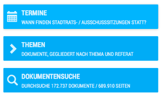
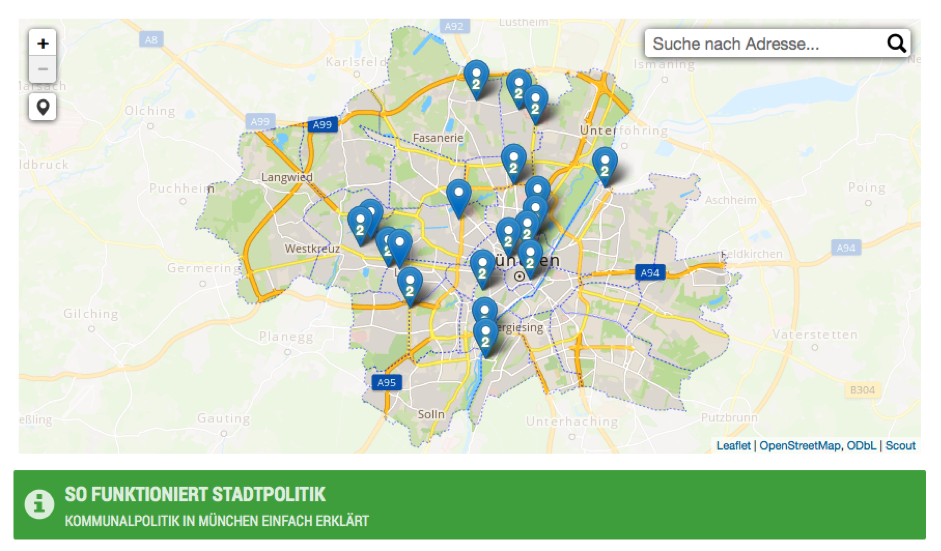

{% extends "_case-studies.html" %}
{% set case_id = 7 %}
{% block challenge %}
Viele Menschen wissen wenig über Kommunalpolitik, selbst wenn sie vielleicht eigentlich gerne mehr erfahren und sich
einbringen möchten. Denn die Informationssysteme und Internetseiten der Verwaltungen sind oft sehr unübersichtlich
gestaltet und wenig benutzerfreundlich. Selbst für Kommunalpolitiker ist es oft umständlich, aktuelle Informationen
über die veraltete Benutzeroberfläche der Ratsinformationssysteme zu finden.
{% endblock %}
{% block solution %}

Eine bedienbare und zeitgemäße Nutzeroberfläche für das Ratsinformationssystem der Stadt. München macht vor, wie es
anders geht. Dort bietet das Internetportal “München Transparent” Informationen zur Arbeit des Münchener Stadtrats
und der Verwaltung sowie Zugang zu Dokumenten wie Beschlüssen oder Vorlagen. Die Plattform ist im Rahmen von Code
for Germany, einem Projekt der Open Knowledge Foundation Deutschland e.V., entstanden und nutzt offizielle Daten und
Informationen der Stadt.
{% endblock %}
{% block datasets %}
München Transparent nutzt Metadaten des öffentlichen Teils des Münchener Ratsinformationssystems (RIS). Metadaten
sind alle Daten, die nicht dem Urheberrecht unterliegen. Dies bedeutet, dass Anträge, also PDF- (und teils
TIFF-)Dateien, nicht bereitgestellt werden, sondern stattdessen auf die Dateien im Original-RIS verlinkt werden.
München Transparent gleicht den Datenbestand etwa einmal täglich mit dem des offiziellen RIS ab – im Regelfall
sollten also neue Dokumente im offiziellen RIS binnen eines Tages auch auf München Transparent erscheinen.
{% endblock %}
{% block benefitters %}
Alle Bürgerinnen und Bürger der Stadt München, die sich an der Kommunalpolitik beteiligen oder sich darüber
informieren möchten.
{% endblock %}
{% block outcome %}
Lena ist für ihren neuen Job nach München gezogen. Langsam hat sie sich eingelebt und findet sich in Münchens
Straßen zurecht. Doch trotzdem hat sie bislang das Gefühl, wie eine Fremde in der Stadt zu wohnen. Bis auf einige
Artikel aus der Süddeutschen Zeitung bekam sie nichts davon mit, was die Bürger um sich treibt oder welche Themen
auf der kommunalpolitischen Agenda stehen. Lena hat das starke Bedürfnis, besser über aktuelle politischen Debatten
in ihrer neuen Stadt und in ihrem Viertel informiert zu sein.
 Ein Arbeitskollege empfahl ihr deshalb die Internetseite „München Transparent”. Diese bietet umfassende
Informationen über alle aktuellen Vorgänge des Stadtrats und der Verwaltung. Dabei kann man entweder nach den
Städtischen Referaten suchen oder nach bestimmten Schlagworten, wie zum Beispiel Bildung, Mietpreise, Fahrräder oder
Umweltschutz. Auf einer Karte konnte Lena auch direkt auf ihren Stadtteil klicken und nachsehen, welche Anträge und
anderen Fragen für dieses Gebiet aktuell diskutiert werden.
Ein Arbeitskollege empfahl ihr deshalb die Internetseite „München Transparent”. Diese bietet umfassende
Informationen über alle aktuellen Vorgänge des Stadtrats und der Verwaltung. Dabei kann man entweder nach den
Städtischen Referaten suchen oder nach bestimmten Schlagworten, wie zum Beispiel Bildung, Mietpreise, Fahrräder oder
Umweltschutz. Auf einer Karte konnte Lena auch direkt auf ihren Stadtteil klicken und nachsehen, welche Anträge und
anderen Fragen für dieses Gebiet aktuell diskutiert werden.
Die Seite bietet unter anderem:
- Einen virtuellen Kalender zu Stadtrats- und Ausschusssitzungen (inklusive Link zur Tagesordnung),
- Übersicht über die Personen, die im Stadtrat und in den Bezirksausschüssen sitzen,
- Dokumente gegliedert nach Thema und Referat, sowie
- eine Möglichkeit zur E-mail-Benachrichtigung, wenn man über neue Dokumente informiert werden möchte.
Am Anfang war Lena noch von den vielen Begriffen verwirrt - was sind und tun Beiräte? Wie viele gibt es davon
überhaupt und zu welchen Themen arbeiten sie? Und was ist der Unterschied zwischen einem Anliegen und einem Antrag?
Auf der Seite von München Transparent fand sie einen Glossar, der ihr alle diese Fragen beantwortete. Darüber hinaus
erklärt auch ein Video, wie die Stadtpolitik funktioniert.

Lena beschloss, sich per E-mail über bestimmt Themen informieren zu lassen. Dank der Benachrichtigungen tauchte sie
schnell in die lokale Stadtdiskussion ein. Anträge zu den für den für sie interessanten Themen guckt Lena inzwischen
regelmäßig auf München Transparent nach. Bei den Anträgen können Nutzerinnen und Nutzer nicht nur per Link auf das
Antragsdokument weitergeleitet werden, sondern sie können auch sehen, welche Personen diesen initiiert haben, welche
Fraktion den Antrag gestellt hat und welche Bearbeitungsfrist und -status der Antrag hat.
Dadurch hat Lena neben aktuellen politischen Fragen, insbesondere im Zusammenhang mit der Flüchtlingspolitik, auch
so praktische Informationen erhalten wie etwa, dass im Münchener Westen ein neuer Abenteuerspielplatz geplant ist.
Darüber wird sich ihr Sohn Max sehr freuen. Als Lena begeistert von der Seite auf der Arbeit erzählte, zeigten sich
auch einige Kolleginnen und Kollegen sehr daran interessiert, die schon immer oder schon seit vielen Jahren in
München leben, sich aber nie intensiv mit Kommunalpolitik beschäftigt haben, weil sie zu wenig Informationen und
Anknüpfungspunkte gefunden hatten. Damit erreicht München Transparent nicht nur die Münchener Neulinge, sondern auch
Alt-Eingesessene.
{% endblock %}
{% block shortinfo %}
Steckbrief
Das Projekt entstand etwa 2010 als Privatprojekt, zunächst im Rahmen der offiziellen Open-Government-Initiative der
Stadt München.
Dann unterstützte die Open Knowledge Foundation Deutschland e.V. das Projekt im Rahmen der Code for Germany-Initiative.
{% endblock %}
{% block sources %}
Offizielle Seite:
https://www.muenchen-transparent.de/
{% endblock %}